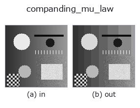

gray op• Datenarten: image → image
• Aufruf: fullseye.apply(img, "companding_mu_law", a=0.5, b=0.5) (das 2-D-Modell ist ein Bild plus zwei skalare Regler a,b∈[0,1])

*Die Abbildung ist die tatsächliche Ausgabe auf einer synthetischen 128×128-Eingabe. Links Eingabe, rechts Ausgabe. Punktwolken als Draufsicht-Streudiagramm (Helligkeit = z), 1-D-Reihen als Linie, Volumen als Maximum-Projektion entlang z, Videos als mittleres Bild, komplexe Bilder als Betrag; Rückgabewerte, die kein Bild ergeben, werden als Werte gezeigt.*
Regler a durchfahren (0,1 / 0,5 / 0,9, der andere Regler auf Standard):
▸ companding_mu_law: knob a sweep (docs site)
Regler b durchfahren (0,1 / 0,5 / 0,9, der andere Regler auf Standard):
▸ companding_mu_law: knob b sweep (docs site)
Auf anderen Bildern (synthetische Szene / Foto / Münzen. Obere Reihe: Eingaben, untere Reihe: deren Ausgaben. Regler auf Standard):
▸ companding_mu_law: other inputs (docs site)
*Die 4. Spalte ist eine Farb-Eingabe (H,W,3). Dieser Op verarbeitet Farbe, ohne Kanäle zu vermischen (er faltet den Farbkanal nicht als dritte Raumachse).*
> Für diesen Operator gibt es noch keine Übersetzung. Es folgt der Originaltext unverändert.
μ 則の圧伸(compand = compress + expand)。`a が μ、b` がビット数。
`F(x) = ln(1 + mu*x) / ln(1 + mu)` で暗部を伸ばしてから量子化し、逆変換で戻す。
結果として刻みが暗部で細かく明部で粗くなる —— 目も撮像系も暗部の差に敏感なので、
同じビット数で見た目の劣化が小さい。電話の音声符号化(G.711)と同じ原理で、
画像では対数的な階調割り当てにあたる。
`a は mu = 1 + 254*a(1〜255、a=0 で実質そのまま)、b` がビット数 1〜8。
Lloyd–Max との違い: あちらはその画像の分布に合わせるので符号表が画像ごとに
変わる。こちらは固定の曲線なので、別の画像・別の装置と値をそのまま比べられる。
分布が対数的に偏っているという仮定が当たっていれば近い性能が出て、外れていれば
Lloyd–Max のほうが良い。
適用条件(実測つき): 入力が `[0,1]` で、0 付近に画素が集中しているとき。
指数分布の合成画像で一様量子化と比べると、暗部集中なら二乗誤差は `0.57` 倍
(3 bit)・`0.51 倍(5 bit)に下がる。**明部集中では逆に 7.7` 倍(3 bit)・
`18` 倍(5 bit)悪化する** —— 白地に暗い傷、という検査画像はまさにこれなので、
そのときは `1 - x` を通してから当てること。段数が非常に少ないとき(2 bit)は
曲線が強すぎて偏った分布でも一様量子化に負ける(実測 1.17 倍)。
• Leitfaden zur Familie gallery2d_gray_arith
• Katalog der Beispieldaten (Download-URLs / Lizenzen) — 2-D nutzt skimage.data (BSD/Public Domain) plus synthetische Bilder, 3-D nennt Download-URLs echter Datenquellen (Stanford, PDS, …).
• Herkunft und Literatur der Operatoren — die Quellen der Forschung/Verfahren, auf denen diese Operatorfamilie beruht.
• Der kanonische Algorithmus (Autor, Jahr) und seine Anwendungen stehen im Familienleitfaden oben.
Das Programm unten ist nachweislich lauffähig (gleiche Eingabe wie die Abbildung). In der Studio-Hilfe wird dieser Block zu Schaltflächen, die es sofort laden und ausführen.
companding_mu_law 0.50 0.50
▸ Load this pipeline · Load & run
• gallery2d_gray_arith — py -3.11 examples/gallery2d_gray_arith.py
image als Eingabe)identity · gaussian · mean_box · bilateral · unsharp · median · min_filter · max_filter
gray)gamma · quantize_uniform · quantize_lloyd_max · quantization_error · dither_ordered · dither_floyd_steinberg · banding_map · invert
*Provenance: ops.py — 2D Operator-Registry. Diese Notiz wird von tools/opdocs.py md erzeugt (nicht von Hand bearbeiten).*
© 2026 Kazufumi Furuse — Fullseye operator documentation. Licensed under Apache-2.0.
{kind=link}
{kind=link}
{kind=link}